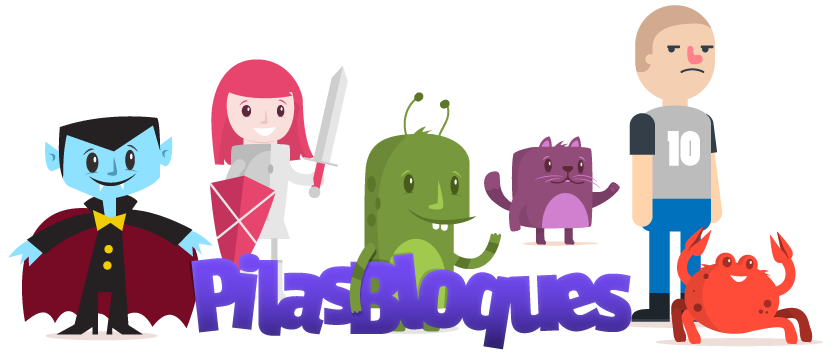
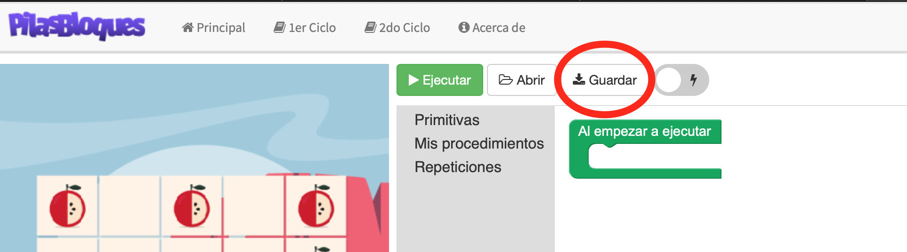

Pilas Bloques

Para los alumnos que nunca trabajaron con ninguna herramienta de programación utilizando bloques, vamos a hacer una introducción utilizando esta herramienta sencilla Pilas Bloques, desarrollada en nuestro país por la fundación Sadosky. La pueden usar on line o bien descargarsela en su computadora, y usarla off line (sin internet).
Es importante destacar que no hay una única solución válida, sino que varios podemos pensar distintas soluciones y todas resolver el problema planteado.
Por cada ejercicio usamos esta estrategia:
1- Planificamos como vamos a resolver el problema - Pensamos
2- Lo programamos - Hacemos
3- Chequeamos como anda, si resuelve o no el problema - Probamos
4- Si lo resuelve terminamos! copiamos la imagen de la resolución en el Ficha de Ejercitación (se descarga del enlace de tarea), y además subimos el archivo de la resolución que genera Pilas Bloques que creemos con ese mismo nombre (Pilas Bloques)
5- Si no lo resuelve correctamente, volvemos al paso 1
Circulo de Deming - Plan / Do / Check / Act:

Recomendaciones:
- Definir al empezar a ejecutar un procedimiento inicial con un nombre de tarea que represente al programa completo.
- Pensar distintas estrategias con las primitivas que tenemos.
- Elegir soluciones que sean fáciles de leer, muchas veces nos toca corregir programas de otros y si no son claros, se nos complica aun mas la tarea de detectar errores de otros.
- Abrir el problema en subproblemas pequeños, cada uno con su procedimiento para resolverlo.
- Las primitivas tienen un orden especifico para resolver el problema.
- Pueden haber muchas soluciones distintas.
- Nos podemos equivocar, pensar otra estrategia, programarla y volver a probar hasta solucionar el problema.
- Los nombres de los procedimientos SI importan.
- El orden de las primitivas es importante.
- En los REPETIR, muchas veces avanzamos y actuamos, otras actuamos y avanzamos, depende la estrategia que pensemos.
- En los REPETIR, a veces tenemos que repetir una vez menos para no irnos del escenario.
- A veces usamos alternativas simple, SI ENTONCES, o a veces alternativas dobles, SI ENTONCES o SINO.
- No poder adentro de un REPETIR poner un SI directamente, para que sea mas legible conviene ponerlo en un procedimiento separado.
Importante - Desafíos a programar:
- Hacer estos ejercicios. Acá esta permitido equivocarse! es la única forma de aprender, preguntá en clase, pregunta por mail, pregunta a un compañero, lo que quieras... pero no te quedes sin hacer los desafíos!
- La tarea consiste en pegar una imagen de tu pantalla en el “Ficha de Ejercitación” una vez que resuelvas cada uno de los problemas o desafíos.
- También deberás guardar el archivo de cada resolución en una carpeta que se llame Pilas Bloques, y enviarla al finalizar la ejercitación.

Desafíos - Actividades
Estructura de control Secuencial
Estructura de control repetitiva de cantidad fija
El marciano en el desierto (4)
Reparando la nave (12),
los números que están arriba al lado de carbón y de hierro, que te parece que son? Para que sirven?
Condicional simple
Condicional doble
Tito recargado (17),
lo haces con condicional simple o doble?
Estructura de control cíclicas o repetitivas - repetir hasta que se cumpla condición
El mono cuenta de nuevo (27),
que representan las variables de arriba? En que momento cambian de valor?
La entrega de las fichas de actividades será en distintas etapas, dejare los 3 enlaces de las tareas programadas con esas fechas.
Ustedes tienen la posibilidad de realizar todas las actividades planteadas y solamente deberán entregar las que estén pautadas en las fichas.
Importante !!!
A la "ficha de ejercitación" adjuntar los archivos completos de los programas realizados
Nota: Recordar que al terminar de finalizar cada ejercicio y probar que funciona correctamente, tenes de descargarlo y guardarlo para luego enviármelo